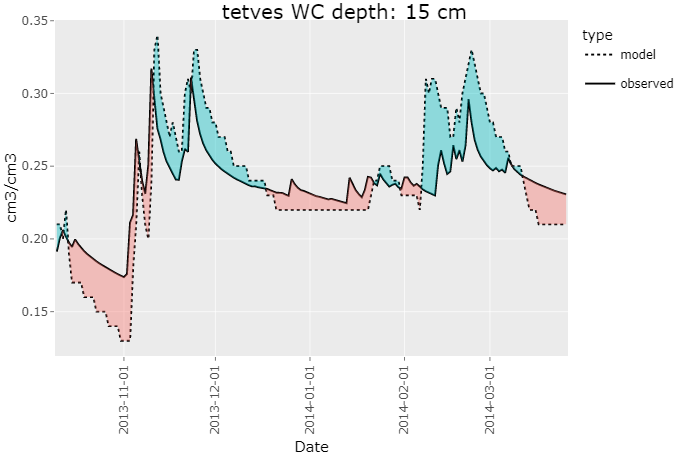
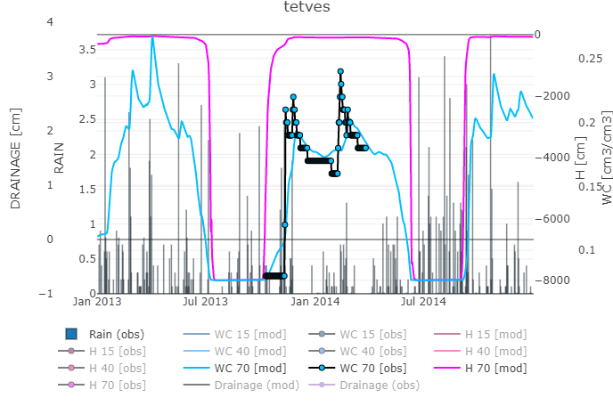

rswap is an R-package designed to help interface and work with SWAP4 [1]. It consists of a variety of functions that assist the user in otherwise tedious and repetitive tasks during the calibration process. The scope of the package will hopefully be expanded overtime to include sensitivity analysis, multi-core parallelization, autocalibration / PEST integration, scenario runs, and much more. DISCLAIMER: rswap is very much in development, and therefore not robustly tested, nor extremely stable. use at your own risk, and be critical of the results, for now..


How to install?
You can install rswap from GitHub:
# install remotes, if not already present
install.packages("remotes")
remotes::install_github("moritzshore/rswap")
library(rswap)A useful place to start would be the rswap_init() function. This function creates the “Hupselbrook” example case in the same directory as your swap.exe. It goes on to run the setup, copy in the observed data template file, and plot the results. If this function finished successfully, you know rswap is working properly.
project_path <- rswap_init(swapexe = "C:/path/to/swap.exe")⚠️IMPORTANT⚠️ Its important to know that rswap never modifies files in your project directory (project_path), instead all files are copied from project_path to project_path/rswap, modified there, and executed. All results are stored there as well and will be overwritten over time. Remember to save your results if you would like to keep them (save_run()), and remember that anything in the project_path/rswap directory is temporary!
How to run SWAP?
The SWAP model can be run using the run_swap() function. It needs to know where your model setup is located (project_path). The swap.exe must be located in the parent directory of project_path!
run_swap(project_path)run_swap() can be further customized with the following parameters:
-
swap_filecan be set to a custom name for your SWAP main file (*.swp) -
autoset_outputcan be enabled, such that the output of the SWAP model matches your provided observed data -
timeoutsets the max allowed runtime of SWAP
How to access the data?
To read the output of your executed SWAP run, you can use the following command:
modelled_data <- read_swap_output(project_path)read_swap_output() returns two dataframes, daily_output which contains depth wise values of various variables.
> modelled_data$daily_output
# A tibble: 17,520 x 5
DATE DEPTH H WC TEMP
<chr> <dbl> <dbl> <dbl> <dbl>
1 2013-01-01 -0.5 -687. 0.118 0
2 2013-01-01 -1.5 -684. 0.118 0
3 2013-01-01 -2.5 -680. 0.118 0
# i 17,517 more rows
# i Use `print(n = ...)` to see more rowsThe other is custom_depth which contains custom variables at custom depths either explicitly altered by the user, or automatically parsed by the autoset_output flag of run_swap(). This dataframe is used widely throughout the package. (more/all results will be added over time)
> modelled_data$custom_depth
# A tibble: 730 x 14
DATE RAIN SNOW DRAINAGE DSTOR H_10 H_20 H_30 WC_15 WC_40 WC_70 TEMP_15 TEMP_40 TEMP_70
<date> <dbl> <dbl> <dbl> <dbl> <dbl> <dbl> <dbl> <dbl> <dbl> <dbl> <dbl> <dbl> <dbl>
1 2013-01-01 0 0 0 -0.0266 -648. -603. -550. 0.122 0.111 0.111 0 0 0
2 2013-01-02 0 0 0 -0.027 -624. -597. -564. 0.124 0.107 0.111 0 0 0
3 2013-01-03 0 0 0 -0.0305 -618. -595. -568. 0.124 0.104 0.111 0 0 0
# i 727 more rows
# i Use `print(n = ...)` to see more rowsAs rswap heavily revolves around calibration, observed data is of high importance. When running either build_rswap_directory() or run_swap(), a template observed file will be copied into the project_directory (if not already existing). It is up to the user to fill this file with the appropriate data and column names. Documentation for how to do this is in the file itself.
To load your observed file, you can use the following command:
observed_data <- load_observed(project_path)which will return a dataframe of the user-entered observed data:
> observed_data$data
# A tibble: 168 x 11
DATE WC_15 WC_40 WC_70 H_15 H_40 H_70 DRAINAGE TEMP_15 TEMP_40 TEMP_70
<date> <dbl> <dbl> <dbl> <dbl> <dbl> <dbl> <dbl> <dbl> <dbl> <dbl>
1 2013-10-10 0.21 0.12 0.08 0.21 0.12 0.08 0.21 0.12 0.08 0.21
2 2013-10-11 0.21 0.12 0.08 0.21 0.12 0.08 0.21 0.12 0.08 0.21
3 2013-10-12 0.2 0.12 0.08 0.2 0.12 0.08 0.2 0.12 0.08 0.2
# i 158 more rows
# i Use `print(n = ...)` to see more rows…as well as a vector for the detected variables
> observed_data$observed_variables
[1] "WC" "H" "DRAINAGE" "TEMP" To find out what depths your observed variables have, you can use the following command:
get_depths(observed_data$data)..this can also be filtered by a specific variable by passing variable
Visuals
There are a variety of functions used to visualize your SWAP data, such as plot_over_under()
plot_over_under(project_path, variable = "WC", depth = c(15, 40, 70))plot_over_und() can be passed a variable, as well as a vector depth.

(this plot heavily relies on code from Neal Grantham)
For a more detailed look at multiple variables at once, you can use the soft_calibration_plot()
> soft_calibration_plot(project_path, vars = c("H", "WC", "DRAINAGE"))This function can be passed up to 3 variables, and will display them interactively on the same plot. If observed data is available, they will be displayed as well.

Model performance
A few functions focus on assessing model performance by comparing modelling values to user provided observed values. This functionality is based on the get_performance() function:
> get_performance(project_path, stat = "NSE", variable = "WC", depth = 15)
# A tibble: 1 × 2
var NSE
<chr> <dbl>
1 WC_15 0.62This function is very flexible and can be passed any number of variables, depths, and performance indicators stat (currently supported are NSE, PBIAS, RSR, and RMSE.
Saving model runs
While calibrating a model it can be useful to keep track of different model runs with different parameterization. rswap aids this process with a variety of functions, such as
save_run(project_path, run_name = "COFRED = 0.35")This function saves your entire model set up in a directory (project_directory/rswap_saved). Once a model run has been saved, it can be compared to other model runs, with the following functions.
Comparing model runs
comparative_plot(project_path, variable = "WC", depth = 15)

Once again, this function is quite flexible, and can be passed any available variable or depth
You can compare the performance of your various model runs by using the plot_statistics() function.
plot_statistics(project_path, var = "WC", depth = c(15,40,70))

This plot is equally flexible and can be passed any variable and any amount of depths for any supported stat. the graph type can be switched between default, sorted and ggplot
Modification of Parameters
changing a parameter in rswap can be done using the parse_swp_file() function.
parsed <- parse_swp_file(project_path, swap_file)This returns both a dataframe of all the parameters, as well as a path to where the saved tables are located (I am working on getting a “list of dataframes” to work in R, instead of just writing tables #TODO!)
You can modify the dataframe how you wish, with whatever tools you would like, however rswap does have a simple dedicated function to do this for you.
parameters <- change_swap_par(param = parsed$parameters, name = "COFRED", value = 0.55)This function takes in the dataframe parsed by the previous function and returns that same dataframe with the modified parameter.
get_swap_format() returns the format of the given parameter, whereas set_swap_format() forces the value of the given parameter into the FORTRAN-required format. These functions rely on data from package SWAPtools. (Over time, change_swap_par() will use these automatically to protect you from incorrect formats)
get_swap_format(parameters = "ALTW")
[1] "float"
set_swap_format(parameter = "ALTW", value = 5)
[1] "5.0"If you would like to run SWAP with the modified parameter set, you first would write the new SWAP main file:
write_swap_file(parameters = parameters, table_path = parsed$table_path, outpath = paste0(project_path, "/modified.swp"))And to run this modified SWAP main file, you would of course use run_swap() with the corresponding project_path and swap_file parameters.
Miscellaneous functions
The aforementioned functions rely on more basic general functions which, while are designed for internal use, can possibly also be of assistance to the end user. These are listed below.
filter_swap_data() # filters SWAP data (observed or modelled) by var and depth
match_mod_obs() # matches dataframe structure of observed and modelled
melt_all_runs() # melts together all saved runs + current intotidyformat
Roadmap
Major
- Linux Support (0.3.0)
- Sensitivity analysis (0.4.0)
- Multi-core running (0.5.0)
- Autocalibration / PEST integration (0.6.0)
- Scenario runs (0.7.0)
- SWAPtools plotting integration (0.8.0)
- …(1.0)
Minor
- Parsing support for all SWAP files, not just the main file.
- Add support for multiple variables at differing depths for
autoset_output - Update
plot_over_under()to use ggbraid - Give all exported
rswapfunctions a consistent naming scheme (verb_swap_noun()) - Add a “filename” par to
write_swap_output() - Wrapper function to combine
parse_swp_file()andchange_swap_par()(andwrite_swap_file()?) -
plot_statistics()sorting to follow stat property - Improve r/w of tables
- Add “exact variable matching” and stop removing “RAIN” in
io.R->melt_all_runs() - Move output modifying code to
set_swap_output(), and expand on it. - Renovate
soft_calibration_plot()to accept any variable using new system.
Support and Contributing
If you run into any bugs or problems, please open an issue. The same goes for if you have any suggestions for improvement. If would you like to contribute to the project, let me know! Very open towards collaborative improvement. Fork/Branch off as you please :)
Any OPTAIN case-studies which use rswap are required to bake Moritz Shore a cake using a local recipe from the case-study country.
Acknowledgements
This package was developed for the OPTAIN project and has received funding from the European Union’s Horizon 2020 research and innovation program under grant agreement No. 862756.
References
[1] Van Dam, J. Field-Scale Water Flow and Solute Transport: SWAP Model Concepts, Parameter Estimation, and Case Studies. Ph.D. Thesis, Wageningen University, Wageningen, The Netherlands, 2000.